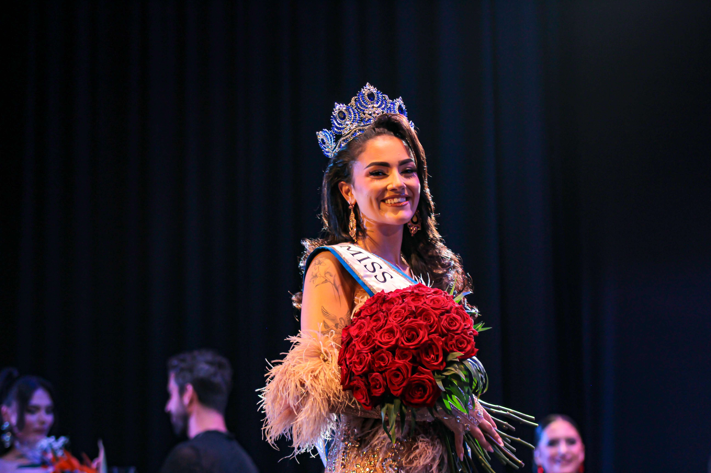

UNIVERSE
SANTA CRUZ
UNIVERSE
SANTA CRUZ
La primera edición de Miss Universe Santa Cruz ya tiene nombre propio. En una noche cargada de emoción, elegancia y momentos inolvidables, Daniela Martínez Morales fue proclamada Miss Universe Santa Cruz 2026, convirtiéndose en la primera mujer en escribir su nombre en la historia de la organización.
El Auditorio Juan Carlos I de Arafo acogió una gala que reunió sobre el escenario a trece candidatas dispuestas a demostrar mucho más que belleza. Pasarela, comunicación, seguridad, personalidad y capacidad de liderazgo fueron algunos de los elementos valorados durante una velada que culminó con la coronación de Daniela ante el aplauso del público.

Una gala concebida para hacer historia
Desde los primeros minutos de la noche, el escenario se convirtió en el punto de encuentro entre moda, espectáculo y crecimiento personal. El opening dio paso a una sucesión de fases diseñadas para mostrar distintas facetas de las participantes, desde su dominio de la pasarela hasta su capacidad para expresarse bajo presión.
La organización planteó la gala como el cierre de un proceso de preparación, pero también como el comienzo de nuevas oportunidades. Cada candidata tuvo su momento para mostrar su evolución, su seguridad y la forma en la que había asumido el reto de formar parte de una primera edición llamada a abrir una nueva etapa para Santa Cruz.
El camino de Daniela hasta la final
Daniela fue avanzando fase a fase con una presencia serena y segura. Su evolución durante la noche la llevó primero al grupo de finalistas y, posteriormente, al Top 3, donde compartió el desenlace de la gala con Danna Hernández Cruz y Valeria Gorrín Samblas.
En las fases decisivas, la capacidad de comunicación, la confianza y la naturalidad adquirieron todavía más peso. El jurado valoró el conjunto de su participación antes de emitir el resultado final que la situaría como la primera reina de la organización.

“La coronación no fue el final de la gala, sino el comienzo de un año de representación y nuevas oportunidades.”
El instante de la coronación
Cuando su nombre fue anunciado como ganadora, Daniela recibió la corona y la banda que la acreditaban como Miss Universe Santa Cruz 2026. El escenario quedó envuelto en una mezcla de emoción, sorpresa y celebración mientras las finalistas y el equipo compartían con ella uno de los momentos más importantes de la noche.
La coronación no representaba únicamente el final de la gala. También marcaba el comienzo de un año de representación, preparación y crecimiento dentro de la organización. Para Daniela, aquel instante supuso asumir una nueva responsabilidad y convertirse en la imagen de una primera edición que ya formaba parte de la historia.

El Top 3 de la primera edición
El Top 3 quedó formado por Daniela Martínez Morales, Danna Hernández Cruz y Valeria Gorrín Samblas. Las tres finalistas permanecen vinculadas a Miss Universe Santa Cruz durante el año de reinado y forman parte de la representación oficial de esta primera etapa de la organización.
Su presencia conjunta durante el reinado permite mantener vivo el espíritu de la gala más allá de la noche final, reforzando la idea de que la experiencia no termina con un resultado, sino que continúa a través de actividades, proyectos y nuevas oportunidades.
Una responsabilidad que comienza
Como primera ganadora de Miss Universe Santa Cruz, Daniela asumió la responsabilidad de representar los valores y la imagen de una organización que inicia su recorrido con la intención de crear oportunidades reales para la mujer canaria.
Su reinado se plantea como una etapa de preparación, visibilidad y participación en proyectos vinculados a la moda, la comunicación y la representación institucional. Desde ese momento, su nombre quedó unido al nacimiento de una nueva plataforma con vocación de crecimiento.

El siguiente capítulo
Apenas unos días después de su coronación, Daniela inició una nueva etapa rumbo a Miss Universe Spain 2026, donde representó a Santa Cruz de Tenerife en el certamen nacional.
Su participación permitió que el nombre de la provincia y el trabajo realizado durante la primera edición tuvieran continuidad más allá de la gala local. La experiencia nacional se convirtió así en el siguiente capítulo de un recorrido que comenzó sobre el escenario de Arafo.
El inicio de una nueva historia
La coronación de Daniela Martínez Morales abrió oficialmente la historia de Miss Universe Santa Cruz. Una historia que comenzó con trece candidatas, una noche inolvidable y una primera reina llamada a representar el inicio de una nueva etapa.
Para la organización, su victoria no fue únicamente un resultado. Fue el punto de partida de un proyecto que continuará creciendo, creando oportunidades y acompañando a nuevas mujeres en su camino personal y profesional.